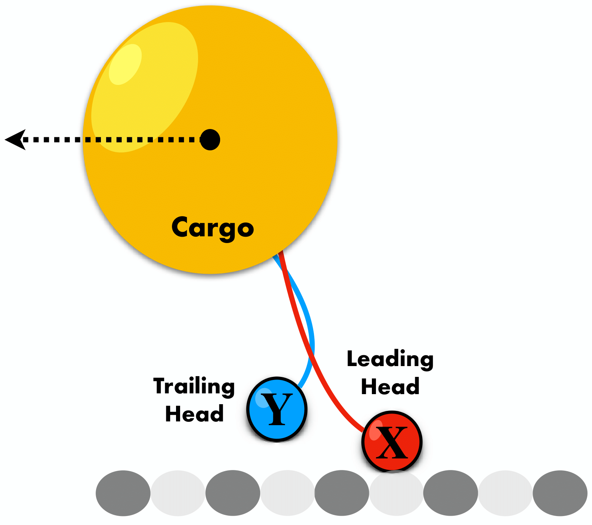

Cellular functions are sustained by various out-of-equilibrium activities. One of the main players of the process is biological machines called molecular motors. These biological machines, akin to their artificial counterparts that convert oil into usable energy, harness energy from chemical reactions like ATP hydrolysis. In the realm of molecular machines, this energy is primarily utilized for various essential transport processes within the cell.
Given that the energy scale of molecular motors is comparable to thermal energy, their operation is inherently stochastic, unlike more deterministic human-made machines. However, despite this element of randomness, these molecular motors must still adhere to the fundamental laws of thermodynamics. Thanks to the development of non-equilibrium thermodynamics in the past decades, it is now possible to understand such microscopic motors. I have developed theoretical frameworks for molecular machines, employing stochastic processes, stochastic thermodynamics, and information theory.